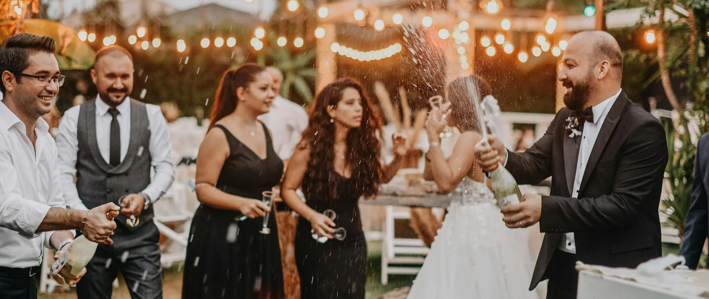

NOVIAS
Algunos de nuestros Vestidos
Jorge y Jazmín, recién casados, reflejan en cada mirada la felicidad de comenzar juntos una nueva etapa. Ella, radiante en un vestido hecho a medida que realza su elegancia natural, y él, con una sonrisa llena de orgullo, celebran el amor que los une.
Elisa y Joaquín, unidos por un amor auténtico, celebran el inicio de su nueva vida juntos. Ella, con un vestido delicadamente confeccionado que refleja su estilo y personalidad, y él, con una elegancia serena, comparten miradas llenas de emoción.
Serena, con una elegancia natural y una delicadeza única, luce un vestido diseñado a medida que realza su belleza y personalidad. Cada detalle de su atuendo refleja un equilibrio perfecto entre sofisticación y sencillez, capturando la esencia de un día tan especial.
Rosa y Hugo, envueltos en emoción, celebran su amor con un brillo especial en sus miradas. Ella, elegante en un vestido confeccionado con detalles únicos, y él, con una serenidad cálida, reflejan la alegría de este día inolvidable.
Héctor y Sabrina, ella, radiante en un vestido hecho a medida que refleja su personalidad y delicadeza, y él, con una elegancia sencilla pero profunda.
Armando y Magela, con sonrisas que lo dicen todo, celebran su amor en un día lleno de emociones y momentos inolvidables. Ella, deslumbrante en un vestido diseñado con esmero, refleja elegancia y dulzura, mientras que él, con una mirada llena de orgullo, acompaña cada paso.
Majestuosa
Uno de nuestros vestidos más icónicos es una creación que combina elegancia atemporal con un toque de modernidad. Confeccionado en una delicada mezcla de seda y tul, su silueta estiliza la figura con un corsé estructurado que realza la cintura, mientras que la falda fluida cae con gracia, creando un movimiento suave y etéreo. Los detalles bordados a mano, inspirados en patrones florales, aportan un toque de sofisticación, reflejando horas de trabajo artesanal y dedicación. Cada costura y acabado están cuidadosamente pensados para ofrecer una pieza única que resalte la belleza natural de quien lo lleva.

¿Cómo funciona?
El proceso de creación también es un viaje emocional. Cada prueba, cada ajuste y cada detalle seleccionado se convierten en recuerdos que atesorarás para siempre. Compartir estos momentos con tus seres queridos agrega un valor sentimental que ningún vestido listo para usar podría ofrecer.